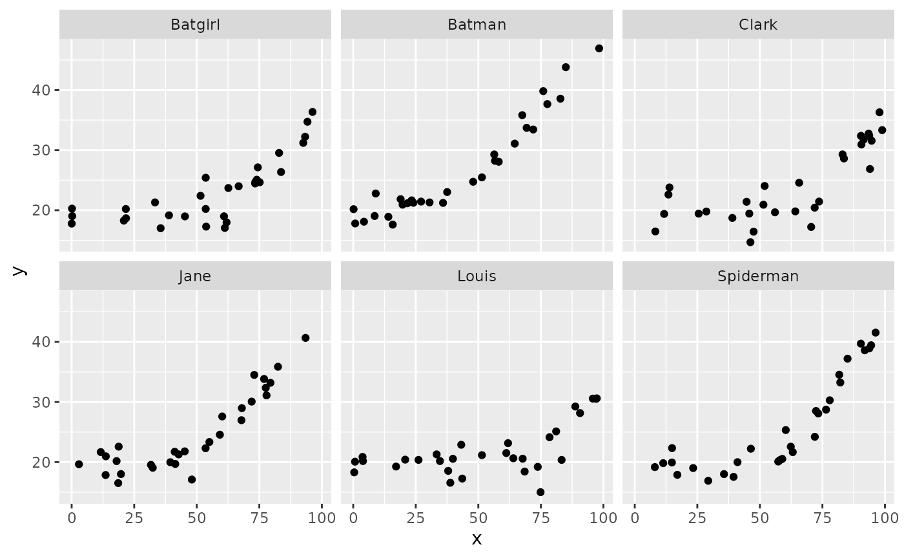
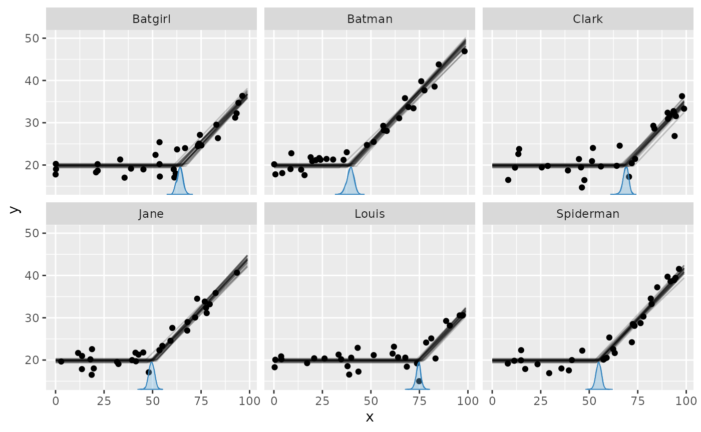
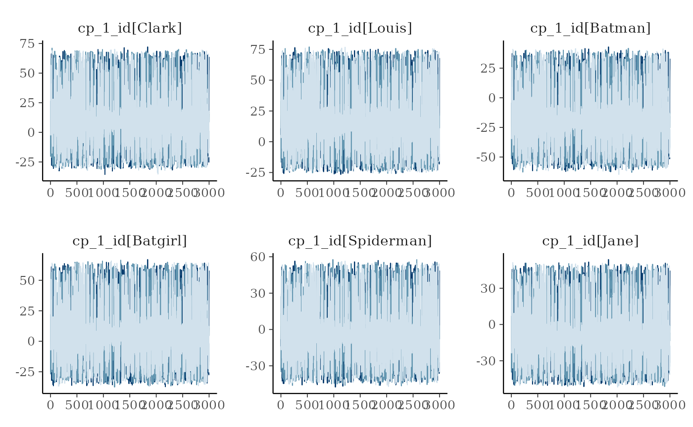
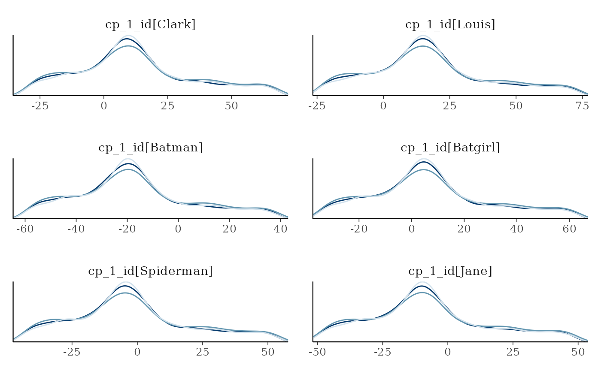

Group-level (random) effects in mcp
2026-09-04
Source:vignettes/group_effects.Rmd
group_effects.Rmdmcp supports group-level effects (also called random
effects) in both the predictor and change-point parts of a formula. The
syntax follows lme4 and brms:
(1|group) specifies a group-level intercept,
(factor||group) specifies independent group coefficients,
fixef() reports population-level effects, and
ranef() reports group-level deviations.
This article in brief:
- Predictor and change-point group-level effects
- How group-level effects persist across segments
- How to simulate group-level change-point deviations
- Get posteriors using
ranef(fit) - Plot using
plot(fit, facet_by="my_group")andplot_pars(fit, pars = "group", type = "dens_overlay", ncol = 3). - How group-specific change points are kept in range and ordered.
- The article on modeling standard deviation via
sigma()contains another group-level change-point example.
library(mcp)
future::plan(future::multisession, workers = 3)
set.seed(42) # Make the script deterministicSpecifying group-level change points
You specify group-level effects using the familiar lmer
and brms syntax (1|group). In the cp part,
this models a group-specific deviation from the population-level change
point. For example:
model = list(
y ~ 1, # Intercept_1
1 + (1|id) ~ 0 + x # cp_1, cp_1_sd, cp_1_id[i]
)You can have multiple group-level change points, but they must use the same grouping factor so their realized locations can be ordered within each group:
model = list(
y ~ 1, # Intercept_1
1 + (1|id) ~ 0 + x, # cp_1, cp_1_sd, cp_1_id[i]
1 + (1|id) ~ 0, # cp_2, cp_2_sd, cp_2_id[i]
(1|id) ~ 1 # cp_3 (implicit), cp_3_sd, cp_3_id[i]
)For change point i and group g, the hierarchy is
\kappa_{ig} \sim \operatorname{Normal}(cp_i, cp_{i,\mathrm{sd}}), \qquad cp_{i,\mathrm{id}[g]} = \kappa_{ig} - cp_i,
where \kappa_{ig} is the
group-specific location. Thus cp_i_id[g] is the reported
deviation and cp_i_sd is the latent normal scale. The
deviations are not forced to sum to zero.
The hierarchy is subject to x_{\min} < \kappa_{1g} < \cdots < \kappa_{Kg} < x_{\max}. Thus, if adjacent change points both vary, their group-specific locations are ordered against each other—not against the adjacent population change point. Internally, JAGS samples \kappa_{ig} directly for efficiency.
Unlike predictor group-level effects, a change-point group effect applies only to the boundary where it is written. There is no carry-over as there is for group-level effects on RHS.
Predictor group-level effects
The same syntax in the predictor part gives each group a deviation from the population-level intercept:
model = list(
y ~ 1 + (1|id), # Starts group-level intercept
~ 0 + x, # Group-level intercept persists here
~ 1 + (0|id) # 0 Turns it off
)Here, the group-level intercept introduced in segment 1 also applies
in segment 2. A later (1|id) would replace it from that
segment onward, while (0|id) turns it off, as in segment 3
above. Persistence is tracked separately for each grouping factor and
distributional parameter. Read more on carry-over rules between segments
in the
article on formulas.
Use || for independent group-level slopes and factor
coefficients:
model = list(
y ~ 1 + condition + (condition||id),
~ 0 + x
)With the default treatment coding, (condition||id)
contains a group-level intercept and one group-level deviation for each
non-reference contrast of condition.
(0 + condition||id) instead gives each factor level its own
group-level coefficient. Similarly, (1 + z||id) specifies
independent group-level intercepts and slopes on a numeric predictor
z. Each coefficient has its own population-level SD.
The population-level and group-level formulas need not contain the
same coefficients. For example, y ~ 1 + (0 + condition||id)
has a population-level intercept but only group-specific condition
coefficients.
Group-level intercepts also work inside distributional formulas:
This model has group-level deviations in both the conditional mean
and log-SD. The || syntax works inside distributional
formulas too, for example sigma(1 + (condition||id)).
A later predictor group-level term for the same distributional
parameter and grouping factor replaces the entire earlier block. Thus,
if (condition||id) is followed in a later segment by
(1||id), only the new intercept deviation applies from that
segment onward. (0|id) turns the block off.
Multi-coefficient terms with |, such as
(1 + x|id), would imply correlated group coefficients and
are not yet supported; use (1 + x||id) for independent
coefficients. Group-level terms inside ar() and
ma() are also not supported.
Unlike change-point deviations, predictor deviations are not
constrained to sum exactly to zero. They have an ordinary mean-zero
hierarchical normal distribution, matching multilevel regression in
lme4 and brms. For example,
(1|id) in segment 1 creates the deviation vector
Intercept_1_id and its population-level SD parameter
Intercept_1_id_sd. (condition||id)
additionally creates names such as conditionB_1_id and
conditionB_1_id_sd; inside sigma(), the
corresponding names start with sigma.
Simulating group-level change points
Let us simulate group-specific deviations in the change point between a plateau and a slope:
model = list(
y ~ 1, # Intercept_1
1 + (1|id) ~ 0 + x # cp_1, cp_1_sd, cp_1_id[i]
)This follows the same interface as predictor group-level effects:
supply the population-level SD and fit$simulate() draws one
deviation per group and centers them exactly on zero.
library(dplyr, warn.conflicts = FALSE)
group_levels = c("Clark", "Louis", "Batman", "Batgirl", "Spiderman", "Jane")
df = data.frame(
x = runif(length(group_levels) * 30, 0, 100), # 30 data points for each
id = rep(group_levels, each = 30), # the group names
y = 1
)
empty = mcp(model, data = df, sample = FALSE)
set.seed(42)
df$y = empty$simulate(empty, df,
# Population-level:
Intercept_1 = 20, x_2 = 0.5, cp_1 = 50, sigma = 2,
# Generate exactly centered group-level deviations with this SD
cp_1_sd = 15)
head(df)## x id y
## 1 91.48060 Clark 31.74661
## 2 93.70754 Clark 32.40289
## 3 28.61395 Clark 19.78775
## 4 83.04476 Clark 29.28600
## 5 64.17455 Clark 19.81068
## 6 51.90959 Clark 24.03685For models with multiple group-level change points, all deviations
are drawn once and then checked for ordering. An unordered draw produces
an error; fit$simulate() does not redraw, sort, or clip the
change points. The result:
library(ggplot2)
ggplot(df, aes(x=x, y=y)) +
geom_point() +
facet_wrap(~id)
Summarise and plot group-level effects
Fitting the model is simple:
fit = mcp(model, data = df, seed = 42)If we just use plot(fit), we would see all points in one
plot. We want to facet by id, so:

It seems that mcp recovered the group-specific change
points well. There is a lot of information in these data because the
population-level intercept and slopes on either side of the change point
are shared across participants (id).
summary(fit) (or fixef(fit)) returns
posterior summaries for the population-level effects. To get the
group-level deviations (random effects), use:
mcp::ranef(fit)## variable mean sd lower upper rhat ess_bulk ess_tail sim match
## 1 cp_1_id[Batgirl] 7.748753 23.56258 -31.85555 58.85708 1.001548 4745 5882 14.315858 OK
## 2 cp_1_id[Batman] -16.906485 23.54159 -56.42552 34.31066 1.001206 4656 5862 -8.463936 OK
## 3 cp_1_id[Clark] 12.532440 23.55908 -27.01466 63.70903 1.001393 4698 5954 20.518845 OK
## 4 cp_1_id[Jane] -6.806863 23.53981 -46.22738 44.38053 1.001252 4698 6116 0.715170 OK
## 5 cp_1_id[Louis] 18.201298 23.56281 -21.31165 69.60913 1.001186 4691 6085 22.900143 OK
## 6 cp_1_id[Spiderman] -1.480419 23.54962 -40.98176 49.48032 1.001462 4675 5991 5.438742 OKInspecting the sim and match columns, we
see that they recovered the simulation parameters well.
Prediction methods include all group-level effects by default. Set
varying = FALSE for population-only predictions,
varying = "cp" for all group-level effects in the cp part,
varying = "predictor" for predictor-side group-level
effects, or supply an exact name such as
varying = "cp_1_id". ranef(fit) deliberately
remains simple and returns all group-level effects.
Good convergence is not always as obvious as in this example. While
plot_pars(fit) shows population-level parameters only, you
can select the group-level deviations with "group":

The ncol argument controls the number of columns.
Group-level effects often have many levels, so this is useful for
viewing all deviations.
Using pars = "group" plots all group-level deviations.
To select one group-level effect, use a regular expression in
regex_pars; for example, ^ anchors the start
of a parameter name:
set.seed(42)
plot_pars(fit, regex_pars = "^cp_1_id", type = "dens_overlay", ncol = 2, nvariables = NULL)
You can also do posterior predictive checking with facets. I think
that for the relatively univariate models supported as of
mcp 0.3, this does not add much new information over and
above plot(fit, facet_by = "id"), but it’s a standard
assessment that many will be acquainted with:

Priors for group-level effects
You can see the priors of the model like this:
prior_summary(fit)## # A tibble: 6 × 5
## parameter segment dpar prior bounds
## <chr> <int> <chr> <chr> <chr>
## 1 cp_1 2 cp dirichlet(alpha = 1) [min(x), max(x)]
## 2 cp_1_sd 2 cp normal(mean = 0, sd = 197.7306) [0, Inf]
## 3 cp_1_id 2 cp normal(mean = 0, sd = cp_1_sd) [min(x) - cp_1, max(x) - cp_1]
## 4 Intercept_1 1 mu student_t(df = 3, location = 21.7, scale = 4.6) none
## 5 x_2 2 mu student_t(df = 3, location = 0, scale = 0.04652796) none
## 6 sigma_1 1 sigma student_t(df = 3, location = 0, scale = 4.6) [0.001, Inf]cp_1_sd is the latent normal scale governing the
cp_1_id deviations. Unlike predictor group-level effects,
change-point locations are also constrained to remain in range and
ordered within each group.
JAGS code
Here is the JAGS code for the model used in this article:
fit$jags_code## model {
## # mcp helper values
## cp_0 = CONST1_
## cp_2 = CONST2_
##
## # Priors for population-level effects
## cp_frac_1_ ~ dbeta(1, 1) # Relative fraction of remaining span (Uniform order statistics)
## cp_1 = cp_0 + cp_frac_1_ * (cp_2 - cp_0) # Ordered change point
## cp_1_sd ~ dnorm(0, 1/(197.7306)^2) T(0,) # Group-level change-point variation
## Intercept_1 ~ dt(21.7, 1/(4.6)^2, 3) # Robustly centered mean intercept with a minimum scale of 2.5
## x_2 ~ dt(0, 1/(0.04652796)^2, 3) # Regularizing mean coefficient scaled to a reference predictor change
## sigma_1 ~ dt(0, 1/(4.6)^2, 3) T(0.001,) # Positive residual SD calibrated on the response scale
##
## # Priors for group-level effects
## for (id_ in 1:n_unique_id) {
## cp_1_id_location[id_] ~ dnorm(cp_1 + CONST3_, 1/(cp_1_sd)^2) T(cp_1 + (CONST1_-cp_1), cp_1 + (CONST2_-cp_1)) # Ordered group-level change-point deviations from the population location
## cp_1_id[id_] = cp_1_id_location[id_] - cp_1 # deviation from population change point
## }
##
## # Model and likelihood
## for (i_ in 1:length(x)) {
## # par_x local to each segment
## x_local_1_[i_] = min(x[i_], (cp_1_id_location[id[i_]]))
## x_local_2_[i_] = min(x[i_], cp_2) - (cp_1_id_location[id[i_]])
##
## # Formula for mu
## link_mu_[i_] =
## (x[i_] >= cp_0) * inprod(rhs_matrix_[i_, c(1)], c(Intercept_1)) * 1 +
## (x[i_] >= (cp_1_id_location[id[i_]])) * inprod(rhs_matrix_[i_, c(2)], c(x_2)) * x_local_2_[i_]
##
## # Formula for sigma
## link_sigma_[i_] =
## (x[i_] >= cp_0) * inprod(rhs_matrix_[i_, c(3)], c(sigma_1)) * 1
##
## # Likelihood and log-density for family = gaussian()
## mu_[i_] = link_mu_[i_]
## sigma_[i_] = max(1e-03, link_sigma_[i_])
## y[i_] ~ dnorm(mu_[i_], 1 / sigma_[i_]^2)
## }
## }